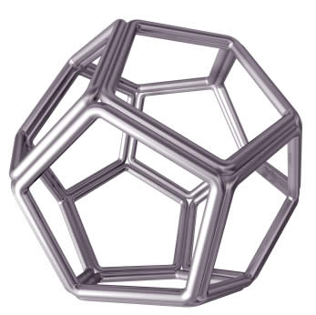
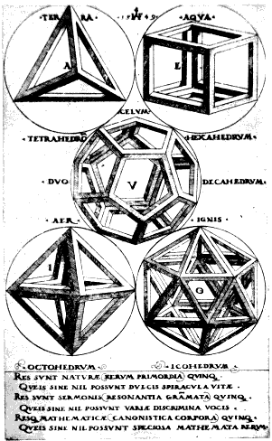
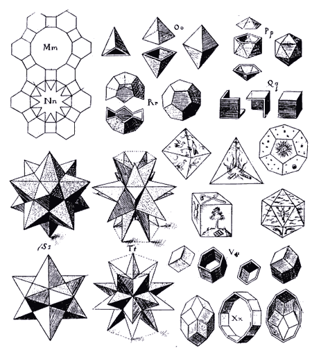

Images of Polyhedra
A polyhedron is a solid with flat faces.
Will Tait, a classically trained artist, constructed a series of dodecahedrons from wood panels:

Here are some illustrations made back in the year 1509 by Leonardo da Vinci (1452-1519) for Luca Pacioli's book called the "The Divine Proportion":
And here Leonardo has illustrated the same shape but with "hollow" sides.
"Vacuus" means hollow.
And here is a modern Dodecahedron just like Leonarda drew, but made of steel:

(You are
supposed to imagine the faces are there)
Just like in the illustration below, which are the five Platonic Solids as drawn by a German artist called Augustin Herschvogel (1503-1553):

And here are the Platonic Solids as dice:

Johannes Kepler (1571-1630) drew these illustrations of polyhedra for his 1619 book "Harmonice Mundi". He has even shown how they could be made:

 |
Also explore 100s of |
And you can try making some of those yourself at Platonic Solids Models.